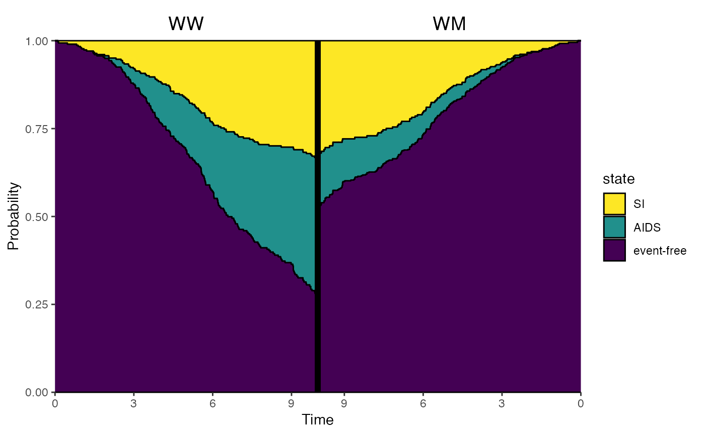

A mirror plot for comparing two different "probtrans" objects. Useful
for comparing predicted probabilities for different levels of a covariate,
or for different subgroups at some prediction time horizon.
Usage
vis.mirror.pt(
x,
titles,
size_titles = 5,
horizon = NULL,
breaks_x_left,
breaks_x_right,
from = 1,
cols,
ord,
xlab = "Time",
ylab = "Probability",
legend.pos = "right"
)Arguments
- x
A list of two
"probtrans"objects. The first element will be on the left of the mirror plot, and the second on the right- titles
A character vector c("Title for left", "Title for right")
- size_titles
Numeric, size of the title text
- horizon
Numeric, position denoting (in time) where to symmetrically mirror the plots. Default is maximum follow-up of from both plots.
- breaks_x_left
Numeric vector specifying axis breaks on the left plot
- breaks_x_right
Numeric vector specifying axis breaks on the right plot
- from
The starting state from which the probabilities are used to plot
- cols
A vector specifying colors for the different transitions; default is a palette from green to red, when type=
"filled"(reordered according toord, and 1 (black), otherwise- ord
A vector of length equal to the number of states, specifying the order of plotting in case type=
"stacked"or"filled"- xlab
A title for the x-axis, default is "Time"
- ylab
A title for the y-axis, default is "Probability"
- legend.pos
Position of the legend, default is "right"
Author
Edouard F. Bonneville e.f.bonneville@lumc.nl
Examples
library(ggplot2)
data("aidssi")
head(aidssi)
#> patnr time status cause ccr5
#> 1 1 9.106 1 AIDS WW
#> 2 2 11.039 0 event-free WM
#> 3 3 2.234 1 AIDS WW
#> 4 4 9.878 2 SI WM
#> 5 5 3.819 1 AIDS WW
#> 6 6 6.801 1 AIDS WW
si <- aidssi
# Prepare transition matrix
tmat <- trans.comprisk(2, names = c("event-free", "AIDS", "SI"))
# Run msprep
si$stat1 <- as.numeric(si$status == 1)
si$stat2 <- as.numeric(si$status == 2)
silong <- msprep(
time = c(NA, "time", "time"),
status = c(NA, "stat1", "stat2"),
data = si, keep = "ccr5", trans = tmat
)
# Run cox model
silong <- expand.covs(silong, "ccr5")
c1 <- coxph(Surv(time, status) ~ ccr5WM.1 + ccr5WM.2 + strata(trans),
data = silong)
# 1. Prepare reference patient data - both CCR5 genotypes
WW <- data.frame(
ccr5WM.1 = c(0, 0),
ccr5WM.2 = c(0, 0),
trans = c(1, 2),
strata = c(1, 2)
)
WM <- data.frame(
ccr5WM.1 = c(1, 0),
ccr5WM.2 = c(0, 1),
trans = c(1, 2),
strata = c(1, 2)
)
# 2. Make msfit objects
msf.WW <- msfit(c1, WW, trans = tmat)
msf.WM <- msfit(c1, WM, trans = tmat)
# 3. Make probtrans objects
pt.WW <- probtrans(msf.WW, predt = 0)
pt.WM <- probtrans(msf.WM, predt = 0)
# Mirror plot split at 10 years - see vignette for more details
vis.mirror.pt(
x = list(pt.WW, pt.WM),
titles = c("WW", "WM"),
horizon = 10
)
